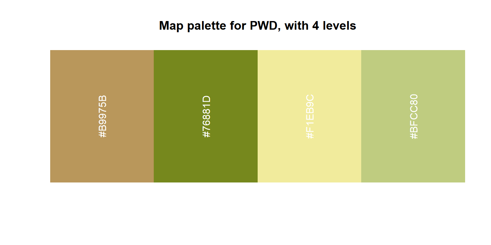
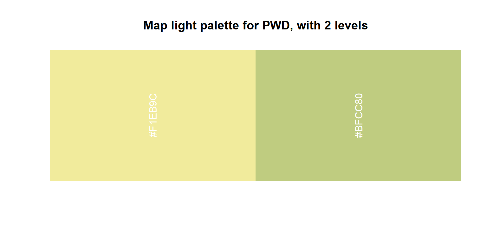

Main
pc_main <- pc + scale_color_pwd("main")
pf_main <- pf + scale_fill_pwd("main")
pc_main + pf_main
view_pwd_palette("main")
pwd-palettes.RmdThe pwdthemes R package includes several color palettes that are based on the style guide provided by the Public Affairs division of the Philadelphia Water Department (PWD). These palettes can be accessed using the pwd_pals() functional or more easily through the scale_color_pwd and scale_fill_pwd ggplot2 scale functions. This guide displays what the full palettes look like.
First, I will create the base figures and define a helper function to render the different figures with each palette
large_diamonds <- diamonds[diamonds$carat > 2.2, ]
pc <- ggplot(large_diamonds, aes(price, carat, color = cut)) +
geom_point() +
theme_pwd()
pf <- ggplot(large_diamonds, aes(price, cut, fill = cut)) +
geom_density_ridges() +
theme_pwd()
display_pals <- function(p1 = pc, p2 = pf, pal){
p1_out <- p1 + scale_color_pwd(pal)
p2_out <- p2 + scale_fill_pwd(pal)
out <- p1_out + p2_out
return(out)
}pc_main <- pc + scale_color_pwd("main")
pf_main <- pf + scale_fill_pwd("main")
pc_main + pf_main
view_pwd_palette("main")
pc_main_dark <- pc + scale_color_pwd("main_dark")
pf_main_dark <- pf + scale_fill_pwd("main_dark")
pc_main_dark + pf_main_dark
view_pwd_palette("main_dark")
pc_main_light <- pc + scale_color_pwd("main_light")
pf_main_light <- pf + scale_fill_pwd("main_light")
pc_main_light + pf_main_light
view_pwd_palette("main_light")
pc_hl <- pc + scale_color_pwd("highlights")
pf_hl <- pf + scale_fill_pwd("highlights")
pc_hl + pf_hl
view_pwd_palette("highlights")
pc_hl_dark <- pc + scale_color_pwd("highlights_dark")
pf_hl_dark <- pf + scale_fill_pwd("highlights_dark")
pc_hl_dark + pf_hl_dark
view_pwd_palette("highlights_dark")
pc_hl_light <- pc + scale_color_pwd("highlights_light")
pf_hl_light <- pf + scale_fill_pwd("highlights_light")
pc_hl_light + pf_hl_light
view_pwd_palette("highlights_light")
pc_map <- pc + scale_color_pwd("map")
pf_map <- pf + scale_fill_pwd("map")
pc_map + pf_map
view_pwd_palette("map")
pc_map_dark <- pc + scale_color_pwd("map_dark")
pf_map_dark <- pf + scale_fill_pwd("map_dark")
pc_map_dark + pf_map_dark
view_pwd_palette("map_dark")
pc_map_light <- pc + scale_color_pwd("map_light")
pf_map_light <- pf + scale_fill_pwd("map_light")
pc_map_light + pf_map_light
view_pwd_palette("map_light")
pc_dark <- pc + scale_color_pwd("dark")
pf_dark <- pf + scale_fill_pwd("dark")
pc_dark + pf_dark
view_pwd_palette("dark")
pc_light <- pc + scale_color_pwd("light")
pf_light <- pf + scale_fill_pwd("light")
pc_light + pf_light
view_pwd_palette("light")
pc_full <- pc + scale_color_pwd("full")
pf_full <- pf + scale_fill_pwd("full")
pc_full + pf_full
view_pwd_palette("full")